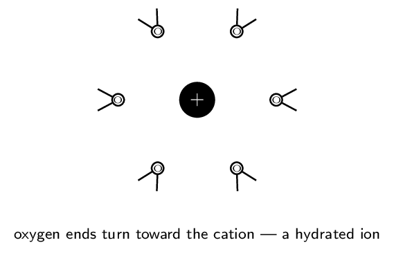

This is the closest the textbook comes to covering an entire CED unit in one place: nearly all of Unit 4 (Chemical Reactions) lives here, and §4.1–4.3 backfill the solution and molarity content of Unit 3.7–3.8. Three skills introduced here are used continuously for the rest of the year — writing net ionic equations, assigning oxidation states, and doing solution stoichiometry, which becomes titration math in Unit 8.
One caution: §4.10's full half-reaction balancing in acidic and basic solution goes beyond what the CED requires. It is marked ENRICHMENT in Block 5 — valuable, but not tested.
Water, Solutions, and Electrolytes Zumdahl §4.1–4.3
- Explain why water dissolves ionic and polar substances, at the particle level.
- Classify solutes as strong electrolytes, weak electrolytes, or nonelectrolytes and predict conductivity.
- Calculate molarity, prepare solutions, and perform dilutions.
Read: Zumdahl §4.1–4.3 • PDF pp. 169–182
- Geometry and polarity of \(\ce{H2O}\):
- Formula for ammonium sulfate:
- Moles in 58.44 g \(\ce{NaCl}\):
INSTRUCTION A • Why water is the universal solvent 25 min
The structure behind the behavior ZUM §4.1
SP 1Water's power as a solvent is a direct consequence of two structural facts you already know from Unit 2. First, each O–H bond is strongly , because oxygen's electronegativity far exceeds hydrogen's. Second, the molecule is , so those two bond dipoles do not cancel — water carries a substantial net dipole, with a partial negative charge on and partial positives on the hydrogens.
That permanent dipole is the whole story. When an ionic solid is placed in water, the water molecules orient themselves around each ion: oxygen ends point toward , hydrogen ends point toward . The resulting ion–dipole attractions release enough energy to compete with the lattice energy holding the crystal together. If ion–dipole attraction wins, the solid dissolves and the ions become hydrated — each surrounded by a shell of oriented water molecules.

Dissolving is a competition, not a guarantee. The lattice must be pulled apart (costs energy) and the ions must be hydrated (releases energy). When hydration cannot pay for the lattice, the salt stays solid — which is exactly what the solubility rules in Block 2 summarize empirically.
GUIDED PRACTICE • Predicting from structure 15 min
- Which end of a water molecule approaches a \(\ce{Cl-}\) ion, and why?
- Would you expect \(\ce{CCl4}\) to dissolve \(\ce{NaCl}\)? Justify.
INSTRUCTION B • Electrolytes: three behaviors 20 min
Strong, weak, and non ZUM §4.2
SP 1Conductivity is a measurement of ion concentration. A solution conducts only if mobile ions are present, so a conductivity test sorts solutes into three classes:
| Class | What happens in water | Examples |
|---|---|---|
| Strong electrolyte | dissociates or ionizes | soluble salts (\(\ce{NaCl}\)); strong acids (\(\ce{HCl}\), \(\ce{HNO3}\), \(\ce{H2SO4}\)); strong bases (\(\ce{NaOH}\), \(\ce{KOH}\)) |
| Weak electrolyte | ionizes only — an equilibrium | weak acids (\(\ce{HC2H3O2}\)); weak bases (\(\ce{NH3}\)) |
| Nonelectrolyte | dissolves as | sugar, ethanol; and water itself |
“Strong” and “concentrated” are unrelated words. Strong describes the fraction that ionizes (a property of the substance); concentrated describes how much solute is present (a property of the solution). A dilute \(\ce{HCl}\) solution is still a strong acid; a concentrated acetic acid solution is still weak.
APPLICATION • Molarity, dilution, and preparation 20 min
Concentration ZUM §4.3
SP 5Note carefully: liters of solution, not liters of solvent. This is why you dissolve the solid first and then add water up to the mark.
Prepare 500.0 mL of 0.250 M \(\ce{Na2CO3}\) (\(M = 105.99\,\mathrm{g/mol}\)). \begin{align*} n &= (0.5000\ \text{L})(0.250\ \text{mol/L}) = 0.125\,\mathrm{mol}\\ m &= (0.125)(105.99) = 13.2\,\mathrm{g} \end{align*} Weigh 13.2 g, dissolve in roughly 300 mL of water, transfer to a 500 mL volumetric flask, then add water to the calibration mark and invert to mix.
How much 16 M \(\ce{HNO3}\) is needed to make 250. mL of 0.50 M? \[ V_1 = \frac{M_2V_2}{M_1} = \frac{(0.50)(250.)}{16} = 7.8\,\mathrm{mL} \] Dilution changes volume but not , which is why \(M_1V_1 = M_2V_2\) works. (Always add acid to water, never the reverse.)
Ion concentrations in electrolyte solutions
Because strong electrolytes dissociate completely, the ion concentrations follow directly from the formula:- 0.10 M \(\ce{Na2SO4}\): \([\ce{Na+}] =\) , \([\ce{SO4^2-}] =\)
- 0.25 M \(\ce{Al(NO3)3}\): \([\ce{NO3-}] =\)
Precipitation Reactions and Solubility Zumdahl §4.4–4.5, 4.7
- Use solubility rules to predict whether a precipitate forms.
- Predict products by ion interchange and write balanced equations.
- Carry out stoichiometry for precipitation reactions.
Read: Zumdahl §4.4–4.5, 4.7 • PDF pp. 182–192
- \([\ce{Cl-}]\) in 0.20 M \(\ce{CaCl2}\):
- Strong or weak electrolyte: \(\ce{HNO3}\)?
- Dilute 10.0 mL of 6.0 M to 60.0 mL:
- Nonelectrolyte example:
INSTRUCTION A • The solubility rules 25 min
Zumdahl's Table 4.1 ZUM §4.5
SP 4These rules are empirical — they summarize what experiment shows, in rough order of reliability. Learn them in order; the later rules are the ones with the important exceptions.
| Soluble | Notable exceptions | |
|---|---|---|
| 1 | Most (\(\ce{NO3-}\)) salts | none worth memorizing |
| 2 | Salts of alkali metals (\(\ce{Li+}\), \(\ce{Na+}\), \(\ce{K+}\), \(\ce{Rb+}\), \(\ce{Cs+}\)) and | none |
| 3 | Most \(\ce{Cl-}\), \(\ce{Br-}\), \(\ce{I-}\) salts | |
| 4 | Most \(\ce{SO4^2-}\) salts | |
| 5 | Most hydroxides are only slightly soluble | soluble: ; marginal: \(\ce{Ba(OH)2}\), \(\ce{Sr(OH)2}\), \(\ce{Ca(OH)2}\) |
| 6 | Most \(\ce{S^2-}\), \(\ce{CO3^2-}\), \(\ce{CrO4^2-}\), \(\ce{PO4^3-}\) salts are only slightly soluble | except those with the cations from |
Rules 1 and 2 are the two you can lean on hardest: anything paired with nitrate, an alkali metal, or ammonium dissolves. When scanning a possible product, check those two first — they resolve most questions instantly.
GUIDED PRACTICE • Soluble or not? 15 min
- \(\ce{KNO3}\):
- \(\ce{AgCl}\):
- \(\ce{BaSO4}\):
- \(\ce{(NH4)2S}\):
- \(\ce{CaCO3}\):
INSTRUCTION B • Predicting products by ion interchange 20 min
What forms when solutions are mixed? ZUM §4.5
SP 4Zumdahl is candid that predicting products is one of the hardest things a beginning student is asked to do. The procedure that makes it tractable:
- List the ions actually present after mixing (remember: strong electrolytes are already ).
- Form the two possible new pairings by cation and anion. A solid must be electrically neutral, so pair cation with only.
- Check each possibility against the solubility rules.
- Anything insoluble is the precipitate; the rest stays dissolved.
Mix \(\ce{K2CrO4(aq)}\) and \(\ce{Ba(NO3)2(aq)}\). Ions present: \(\ce{K+}\), \(\ce{CrO4^2-}\), \(\ce{Ba^2+}\), \(\ce{NO3-}\).
Interchange gives two candidates: \(\ce{KNO3}\) and \(\ce{BaCrO4}\). Rules 1 and 2 make \(\ce{KNO3}\) soluble. Rule 6 makes \(\ce{BaCrO4}\) insoluble (barium is not an alkali metal). So a yellow solid of \(\ce{BaCrO4}\) forms: \[ \ce{K2CrO4(aq) + Ba(NO3)2(aq) -> BaCrO4(s) + 2 KNO3(aq)} \] The \(\ce{K+}\) and \(\ce{NO3-}\) ions stay dispersed in solution. Remove the solid and evaporate the water, and they would reassemble into solid \(\ce{KNO3}\).
Mix \(\ce{NaCl(aq)}\) and \(\ce{KNO3(aq)}\). Candidates: \(\ce{NaNO3}\) and \(\ce{KCl}\). Both are soluble by rules 1–3. No precipitate forms — the solution simply contains four kinds of ion. Write “no reaction.” Being willing to answer “nothing happens” is part of the skill.
APPLICATION • Precipitation stoichiometry 20 min
The mass of precipitate is an ordinary stoichiometry problem — with one extra front step: convert volume and molarity into .
What mass of \(\ce{AgCl}\) forms when 50.0 mL of 0.200 M \(\ce{AgNO3}\) is mixed with excess \(\ce{NaCl}\)? \begin{align*} n(\ce{Ag+}) &= (0.0500)(0.200) = 0.0100\,\mathrm{mol}\\ &\ce{Ag+ + Cl- -> AgCl(s)} \quad (1{:}1)\\ m(\ce{AgCl}) &= (0.0100)(143.32) = 1.43\,\mathrm{g} \end{align*}
- 25.0 mL of 0.100 M \(\ce{BaCl2}\) is mixed with excess \(\ce{Na2SO4}\). Find the mass of \(\ce{BaSO4}\) (\(M = 233.39\)).
- Explain why the answer does not depend on how much \(\ce{Na2SO4}\) was
added, provided it is in excess.
Ionic Equations Zumdahl §4.6
- Write formula, complete ionic, and net ionic equations.
- Identify spectator ions and explain why they are omitted.
Read: Zumdahl §4.6 • PDF pp. 188–190
- Soluble or not: \(\ce{PbSO4}\)?
- Products of \(\ce{AgNO3(aq) + KCl(aq)}\):
- Moles of \(\ce{Ag+}\) in 20.0 mL of 0.150 M \(\ce{AgNO3}\):
INSTRUCTION A • Three equations, three levels of honesty 25 min
From formula to net ionic ZUM §4.6
SP 1The formula equation is convenient but, as Zumdahl puts it, “does not give a correct picture of what actually occurs in solution.” Three levels:
| Formula equation | every substance written as a neutral compound |
|---|---|
| Complete ionic | every written as separated ions |
| Net ionic | only the species that |
Net ionic: \[ \ce{Ba^2+(aq) + CrO4^2-(aq) -> BaCrO4(s)} \]
The rule that governs everything: what gets split?
- Split (write as ions): soluble salts, strong acids, strong bases — i.e. all .
- Keep together: solids \(\ce{(s)}\), liquids \(\ce{(l)}\), gases \(\ce{(g)}\), , and nonelectrolytes.
Water is a nonelectrolyte — never write it as \(\ce{H+ + OH-}\) in an ionic equation. And a weak acid such as \(\ce{HC2H3O2}\) stays intact even though it is aqueous, because it barely ionizes. Splitting a weak acid is the most common net-ionic error.
GUIDED PRACTICE • Write all three 15 min
For \(\ce{Pb(NO3)2(aq) + 2 NaI(aq) -> PbI2(s) + 2 NaNO3(aq)}\):- Complete ionic:
- Spectator ions:
- Net ionic:
INSTRUCTION B • Why net ionic equations matter 20 min
The same reaction, many disguises ZUM §4.6
SP 6The net ionic equation strips away everything incidental, which reveals that apparently different reactions are the same reaction.
All three of these produce the identical net ionic equation \(\ce{Ag+(aq) + Cl^-(aq) -> AgCl(s)}\): \begin{align*} \ce{AgNO3(aq) + NaCl(aq) &-> AgCl(s) + NaNO3(aq)}\\ \ce{AgNO3(aq) + KCl(aq) &-> AgCl(s) + KNO3(aq)}\\ \ce{AgC2H3O2(aq) + NH4Cl(aq) &-> AgCl(s) + NH4C2H3O2(aq)} \end{align*} The spectators differ; the chemistry does not. This is why a chemist writes the net ionic equation — it names the actual event.
APPLICATION • Net ionic reasoning 20 min
- Write the net ionic equation for mixing \(\ce{Na2CO3(aq)}\) and
\(\ce{CaCl2(aq)}\).
- Mixing \(\ce{NaNO3(aq)}\) and \(\ce{KCl(aq)}\) gives no net ionic equation
at all. Explain what that means physically.
- A student writes \(\ce{Ba^2+ + SO4^2- -> BaSO4(s)}\) for the reaction of
\(\ce{Ba(OH)2(aq)}\) with \(\ce{H2SO4(aq)}\). What did they miss?
Acid–Base Reactions Zumdahl §4.8
- Define acids and bases in Arrhenius and Bronsted–Lowry terms.
- Write net ionic equations for strong and weak acid neutralizations.
- Perform titration stoichiometry.
Read: Zumdahl §4.8 • PDF pp. 192–199
- Net ionic for \(\ce{AgNO3(aq) + NaCl(aq)}\):
- Do you split \(\ce{H2O}\) in an ionic equation?
- Strong acid example:
- Moles in 35.0 mL of 0.200 M:
INSTRUCTION A • Two definitions, one behavior 25 min
Arrhenius and Bronsted–Lowry ZUM §4.8
SP 1- Arrhenius: an acid produces in water; a base produces .
- Bronsted–Lowry: an acid is a proton ; a base is a proton . This is broader — it covers \(\ce{NH3}\), which produces \(\ce{OH-}\) without containing it.
The strong acids and bases worth memorizing
Strong acids: \(\ce{HCl}\), \(\ce{HBr}\), \(\ce{HI}\), \(\ce{HNO3}\), \(\ce{H2SO4}\),
\(\ce{HClO4}\).
Strong bases: hydroxides of plus
\(\ce{Ca(OH)2}\), \(\ce{Sr(OH)2}\), \(\ce{Ba(OH)2}\).
Everything else you meet this year is .
GUIDED PRACTICE • Classify 15 min
- \(\ce{HNO3}\):
- \(\ce{NH3}\):
- \(\ce{HF}\):
- \(\ce{KOH}\):
INSTRUCTION B • Neutralization at the ion level 20 min
Two cases, two net ionic equations ZUM §4.8
SP 6Mix \(\ce{HCl(aq)}\) and \(\ce{NaOH(aq)}\). The mixed solution contains \(\ce{H+}\), \(\ce{Cl-}\), \(\ce{Na+}\), \(\ce{OH-}\). Would \(\ce{NaCl}\) precipitate? Rules 2 and 3 say no — so \(\ce{Na+}\) and \(\ce{Cl-}\) are spectators. But \(\ce{H+}\) and \(\ce{OH-}\) cannot coexist in quantity, because water is a nonelectrolyte: \[ \ce{H+(aq) + OH^-(aq) -> H2O(l)} \] Every strong-acid/strong-base neutralization has this same net ionic equation.
Mix \(\ce{HC2H3O2(aq)}\) and \(\ce{KOH(aq)}\). Acetic acid is a weak electrolyte, so it stays intact: \[ \ce{HC2H3O2(aq) + OH^-(aq) -> C2H3O2^-(aq) + H2O(l)} \] The whole acid molecule appears, because the hydrogen is transferred directly rather than being freely available beforehand. Only \(\ce{K+}\) is a spectator.
The two cases give different net ionic equations, and telling them apart requires knowing whether the acid is strong or weak. Memorize the six strong acids — everything else is weak, and stays whole.
APPLICATION • Titration stoichiometry 20 min
A titration adds a solution of known concentration (the titrant) until the reaction is exactly complete — the equivalence point, signaled by an colour change.
It takes 27.4 mL of 0.150 M \(\ce{NaOH}\) to neutralize 25.0 mL of \(\ce{HCl}\). Find \([\ce{HCl}]\). \begin{align*} n(\ce{OH-}) &= (0.0274)(0.150) = 4.11e-3\,\mathrm{mol}\\ &\ce{H+ + OH^- -> H2O} \quad (1{:}1) \Rightarrow n(\ce{H+}) = 4.11e-3\,\mathrm{mol}\\ [\ce{HCl}] &= \frac{4.11\times10^{-3}}{0.0250} = 0.164\,\mathrm{M} \end{align*}
- 20.0 mL of \(\ce{H2SO4}\) requires 32.0 mL of 0.250 M \(\ce{NaOH}\). Find \([\ce{H2SO4}]\). Careful with the ratio.
- Why does the diprotic acid change the arithmetic?
Oxidation–Reduction Reactions Zumdahl §4.9–4.11
- Assign oxidation states using the standard rules.
- Identify what is oxidized, what is reduced, and name the agents.
- Balance simple redox equations; perform redox titration stoichiometry.
Read: Zumdahl §4.9–4.11 • PDF pp. 199–212
- Net ionic for strong acid + strong base:
- Moles of \(\ce{H+}\) in 25.0 mL of 0.100 M \(\ce{H2SO4}\):
- Charge on the sulfate ion:
INSTRUCTION A • Oxidation states 25 min
Bookkeeping for electrons ZUM §4.9
SP 5An oxidation state is the imaginary charge an atom would carry if every shared pair were awarded entirely to the more electronegative partner. It is a bookkeeping device, not a real charge — but it lets us track where electrons go.
| Rule | Note | |
|---|---|---|
| 1 | Free element: | \(\ce{Na}\), \(\ce{O2}\), \(\ce{P4}\) |
| 2 | Monatomic ion: equal to its | \(\ce{Na+}\) is \(+1\) |
| 3 | Oxygen: | except peroxides (\(-1\)) |
| 4 | Hydrogen: | except metal hydrides (\(-1\)) |
| 5 | Fluorine: | always |
| 6 | Sum \(=\) for a neutral compound, or the for an ion | this is the equation you actually solve |
Non-integer oxidation states can occur. In \(\ce{Fe3O4}\), four oxygens give \(-8\), so three irons must total \(+8\) — each is \(+8/3\). That looks strange, but the rules deliberately treat all three iron atoms as equivalent when the compound is really \(2\,\ce{Fe^3+} + 1\,\ce{Fe^2+}\) per formula unit.
GUIDED PRACTICE • Assign the underlined element 15 min
- S in \(\ce{H2SO4}\):
- Cr in \(\ce{Cr2O7^2-}\):
- Mn in \(\ce{MnO4-}\):
- N in \(\ce{NH3}\):
- C in \(\ce{CH4}\):
INSTRUCTION B • Identifying redox and naming agents 20 min
Who lost, who gained ZUM §4.9
SP 6A reaction is redox if any element's oxidation state .
| Oxidation | Reduction | |
|---|---|---|
| Electrons | ||
| Oxidation state | ||
| The species itself is the |
The agent labels are counterintuitive by design: the substance that is oxidized is the reducing agent, because it hands its electrons to something else and thereby reduces it. Read the label as “the thing that causes reduction.” OIL RIG — Oxidation Is Loss, Reduction Is Gain.
APPLICATION • Redox titration 20 min
- For \(\ce{Zn(s) + Cu^2+(aq) -> Zn^2+(aq) + Cu(s)}\), identify what is
oxidized, reduced, and both agents.
- In an iron analysis, \(\ce{Fe^2+}\) is titrated with \(\ce{MnO4-}\): \[ \ce{5 Fe^2+ + MnO4^- + 8 H+ -> 5 Fe^3+ + Mn^2+ + 4 H2O} \] A sample requires 18.0 mL of 0.0200 M \(\ce{KMnO4}\). Find the moles of \(\ce{Fe^2+}\).
- Verify that manganese is reduced in that equation by computing its
oxidation state on both sides.
Zumdahl §4.10 develops full half-reaction balancing in acidic and basic solution, adding \(\ce{H2O}\), \(\ce{H+}\), and \(\ce{OH-}\) to balance oxygen and hydrogen. The current AP framework does not require this — it asks you to identify redox and balance simple cases. Learn it if you want the complete picture (it is genuinely useful for Unit 9 electrochemistry), but do not spend exam-prep time on it.